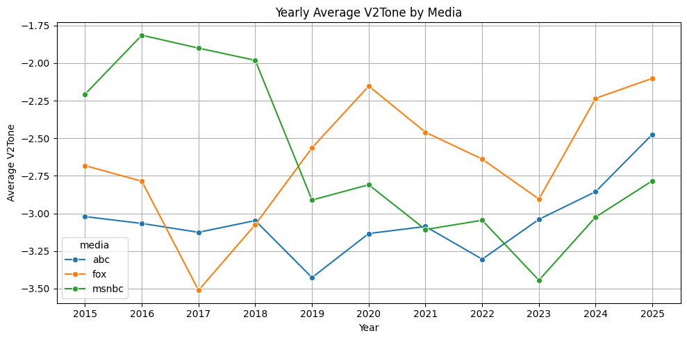
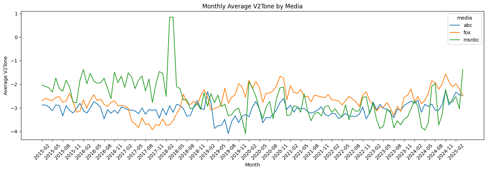

C:\Users\Michael\AppData\Local\Temp\ipykernel_17044\4167548596.py:52: UserWarning: Converting to PeriodArray/Index representation will drop timezone information.
df_all["month"] = df_all["parsed_date"].dt.to_period("M").astype(str)
C:\Users\Michael\AppData\Local\Temp\ipykernel_17044\4167548596.py:53: UserWarning: Converting to PeriodArray/Index representation will drop timezone information.
df_all["week"] = df_all["parsed_date"].dt.to_period("W").astype(str)
import matplotlib.pyplot as pltimport seaborn as snsplt.figure(figsize=(10, 5))sns.lineplot(data=tone_yearly, x="year", y="gdelt_tone", hue="media", marker="o")plt.title("Yearly Average V2Tone by Media")plt.ylabel("Average V2Tone")plt.xlabel("Year")plt.xticks(tone_yearly["year"].unique())plt.grid(True)plt.tight_layout()plt.show()

plt.figure(figsize=(14, 5))ax = sns.lineplot(data=tone_monthly, x="month", y="gdelt_tone", hue="media")plt.title("Monthly Average V2Tone by Media")plt.ylabel("Average V2Tone")plt.xlabel("Month")# 设置 xticks 每 3 个取一个xticks = tone_monthly["month"].unique()plt.xticks(ticks=xticks[::3], rotation=45)plt.tight_layout()plt.show()

plt.figure(figsize=(14, 5))ax = sns.lineplot(data=tone_weekly, x="week", y="gdelt_tone", hue="media")plt.title("Weekly Average V2Tone by Media")plt.ylabel("Average V2Tone")plt.xlabel("Week")# 设置 xticks 每 8 周取一个xticks = tone_weekly["week"].unique()plt.xticks(ticks=xticks[::8], rotation=45)plt.tight_layout()plt.show()